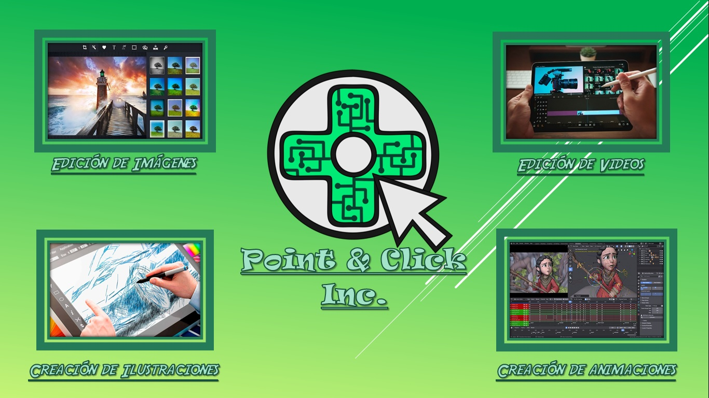
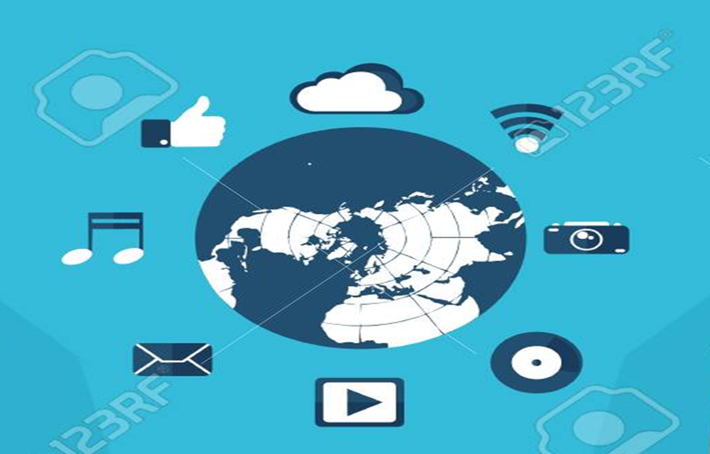
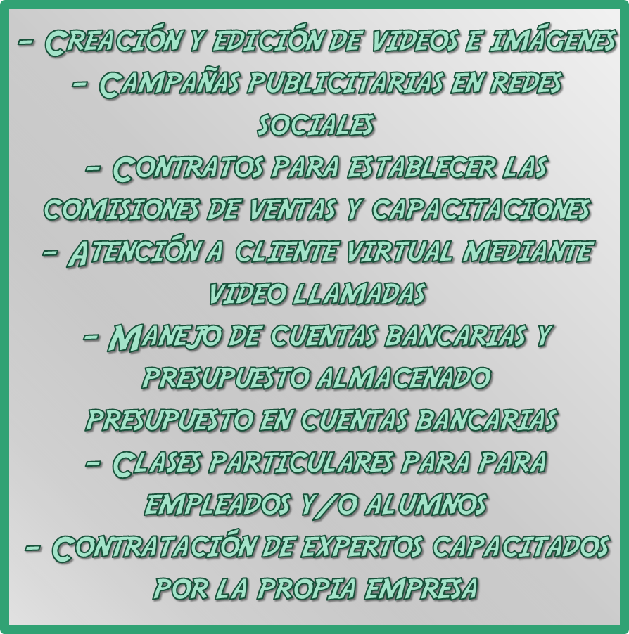

Segmentacion de Clientes
Los clientes a los que va dirigido P&C.Inc son en su mayoria artistas o editores amateur que deseen comprobar y/o mejorar sus capacidades a su vez como para personas que se interesen en servicios de calidad de arte audiovisual mas no estan interesados en aprender a nivel internacional Se pueden identificar 2 grandes nichos para los clientes, siendo el primero aquellos interesados en los servicios de P&C.Inc como lo pueden ser empresas que quieran mejorar su publicidad o clientes particulares interesados en trabajos mas artisticos. El segundo nicho de clientes son aquellos interesados en conseguir una capacitacion por parte de la empresa, aquellos que desean mejorar sus talentos y conseguir una constancia de su manejo en programas de edicion de imagenes y/o videos. La relacion con los clientes de P&C.Inc se centra en la obtencion y satisfaccion de los clientes para garantizar su posterior regreso como consumidores. Que el cliente se sienta a gusto con lo que recibe y/o lo que aprende en P&C.Inc es una prioridad. Para el segmento de clientes interesados en los servicios de edicion se busca que estos puedan disponer de una seleccion de diversos editores capacitados, buscando asi que puedan encontrar uno que sea de su agrado y se adapte a las necesidades de los mismos, posteriormente se puede comunicar con el especialista elegido mediante video llamada u otros medios para poder concretar el trabajo en cuestion y garantizar la relacion con multiples clientes. Para el segmento de aquellos interesados en la capacitacion se busca proveer de profesores y asesores de la propia P&C.Inc como expertos de en otros campos, para asi garantizar un aprendizaje eficaz y solido para los futuros editores, mediante clases presenciales en las cuales se les proveera a los estudiantes del equipo necesario para utilizar adecuadamente el programa a estudiar.

PROPUESTA DE VALOR
Point & Click.Inc (P&C.Inc) es una compania que presta sus servicios de creacion y edicion, tanto de imagenes como de videos, para empresas privadas, publicas o clientes particulares. P&C.Inc busca facilitar a sus artistas y editores una correcta capacitacion y una buena publicidad, ademas de una total atencion a sus clientes y el acceso a expertos que cumplan con sus expectativas. P&C.Inc tambien cuenta con una variedad de cursos para capacitar desde empleados hasta particulares en el uso y manejo adecuado de programas de imagenes y/o videos, proveyendoles de un certificado que demuestra su maestria en dichas herramientas, dando la oportunidad de unirse a la empresa y laborar con tu especialidad certificada.
ACTIVIDADES CLAVE
